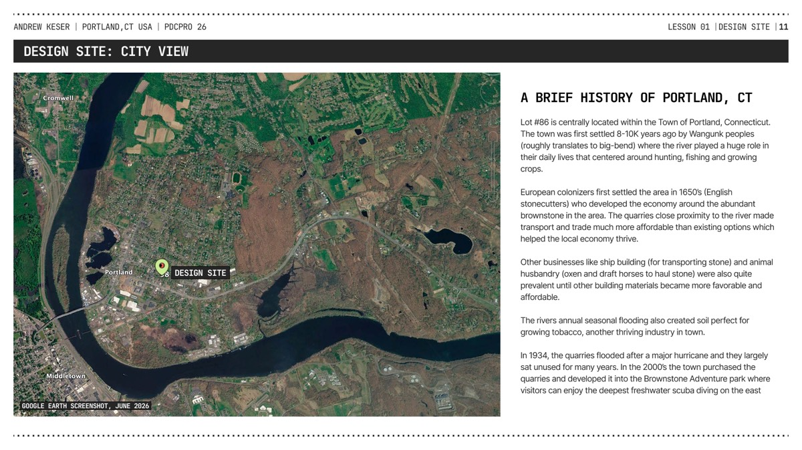
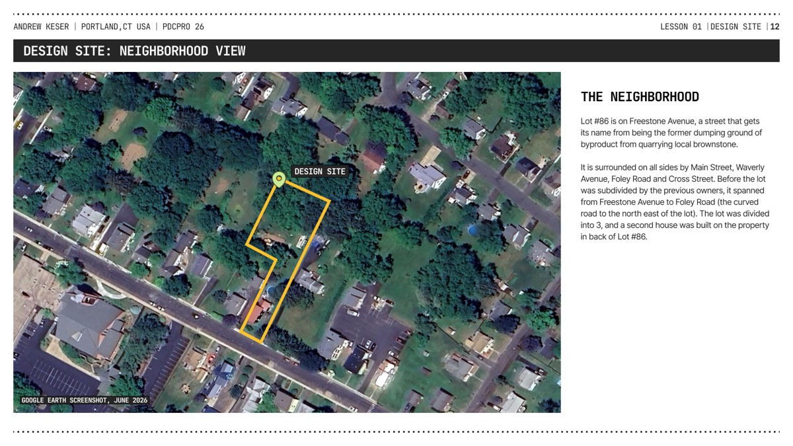
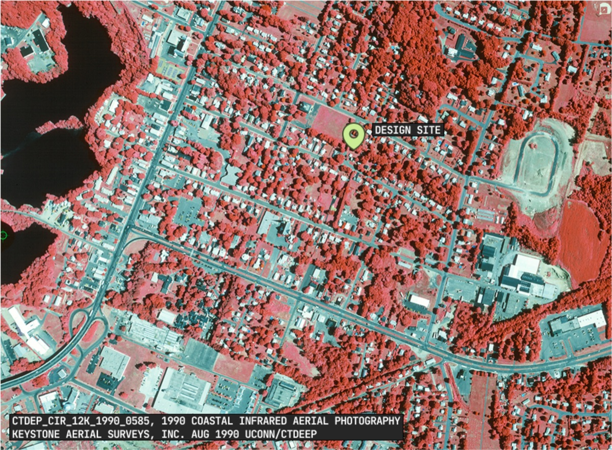
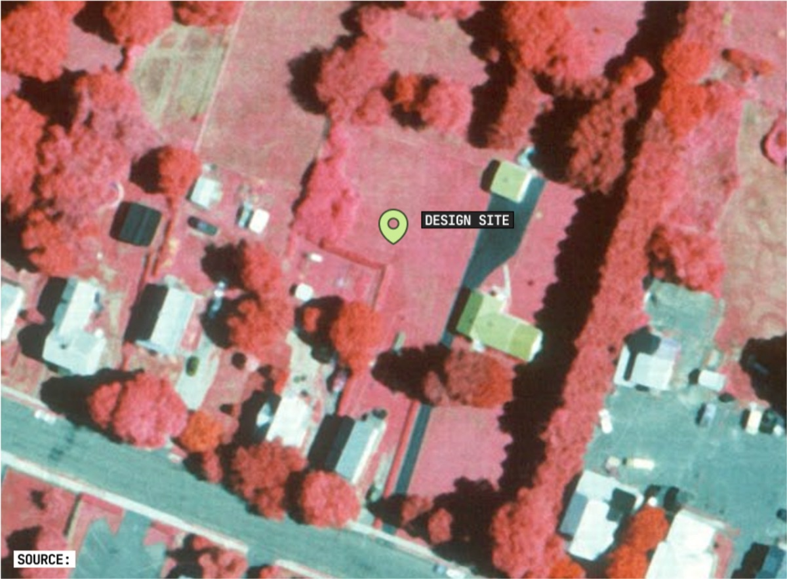

A working reference for designing this 0.43-acre property's permaculture future — climate, solar, wind, hazard, watershed, species, and zone data, all in one place.
58 Freestone Avenue, Portland, CT 06480 · 41°34′22″N 72°38′04″W
Area
0.43 ac (≈18,730 ft²)
Elevation
106–114 ft
Climate
Dfa — hot-summer continental
Hardiness zone
6b
Frost-free season
Apr 14 – Oct 23
Flood risk
FEMA Zone X — minimal

Lot #86 is centrally located within the Town of Portland, Connecticut. The town was first settled 8–10K years ago by Wangunk peoples (roughly translates to big-bend) where the river played a huge role in their daily lives that centered around hunting, fishing and growing crops. European colonizers first settled the area in the 1650s (English stonecutters) who developed the economy around the abundant brownstone in the area — the quarries' close proximity to the river made transport and trade much more affordable than existing options, which helped the local economy thrive. Other businesses like ship building (for transporting stone) and animal husbandry (oxen and draft horses to haul stone) were also quite prevalent until other building materials became more favorable and affordable. The river's annual seasonal flooding also created soil perfect for growing tobacco, another thriving industry in town. In 1934, the quarries flooded after a major hurricane and largely sat unused for many years. In the 2000s the town purchased the quarries and developed them into the Brownstone Adventure Park, where visitors can enjoy the deepest freshwater scuba diving on the East Coast.

Lot #86 is on Freestone Avenue, a street that gets its name from being the former dumping ground of byproduct from quarrying local brownstone. It is surrounded on all sides by Main Street, Waverly Avenue, Foley Road and Cross Street. Before the lot was subdivided by the previous owners, it spanned from Freestone Avenue to Foley Road (the curved road to the north east of the lot). The lot was divided into 3, and a second house was built on the property in back of Lot #86.


Aerial infrared photograph from the 1990 Connecticut Department of Environmental Protection survey (left), where red areas highlight foliage and teal shows paved or unplanted surface area (source: CTDEP_CIR_12K_1990_0585, Keystone Aerial Surveys, Inc., Aug 1990, UConn/CTDEEP). At the time of the close-up photo (right), the property only had turf grass and minimal plantings — taken a year after my parents purchased the property but before they made any major changes to the landscape.